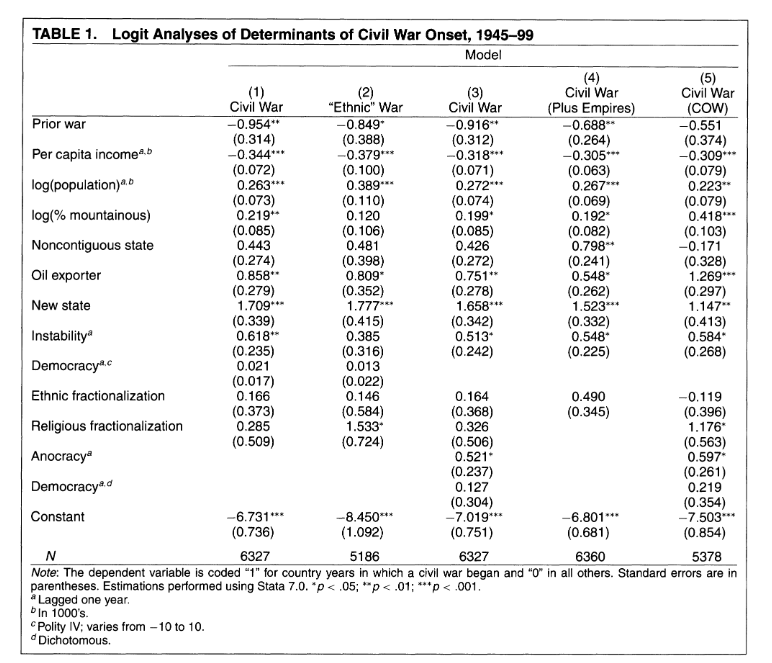
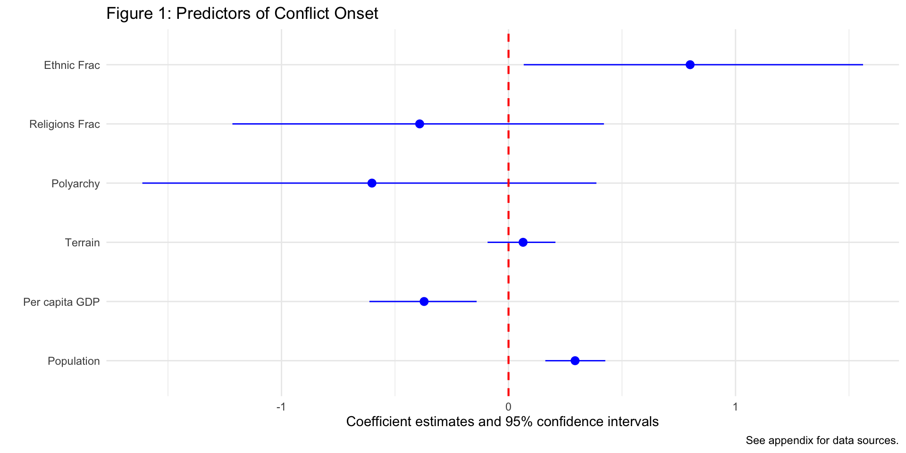

Regression Tables
August 24, 2026
What’s in a Regression Table?

Load Data
02:00
Run Model
02:00
View with summary()
Call:
glm(formula = ucdponset ~ ethfrac + relfrac + v2x_polyarchy +
rugged + wbgdppc2011est + wbpopest, family = binomial(link = "logit"),
data = conflict_df)
Coefficients:
Estimate Std. Error z value Pr(>|z|)
(Intercept) -5.69260 1.40788 -4.043 5.27e-05 ***
ethfrac 0.80005 0.38072 2.101 0.03560 *
relfrac -0.39138 0.41673 -0.939 0.34764
v2x_polyarchy -0.60161 0.50879 -1.182 0.23704
rugged 0.06413 0.07603 0.843 0.39897
wbgdppc2011est -0.37188 0.12059 -3.084 0.00204 **
wbpopest 0.29318 0.06735 4.353 1.34e-05 ***
---
Signif. codes: 0 '***' 0.001 '**' 0.01 '*' 0.05 '.' 0.1 ' ' 1
(Dispersion parameter for binomial family taken to be 1)
Null deviance: 1182.5 on 6150 degrees of freedom
Residual deviance: 1126.7 on 6144 degrees of freedom
(885 observations deleted due to missingness)
AIC: 1140.7
Number of Fisher Scoring iterations: 7View results with broom
library(broom)
tidy_model <- conflict_model |>
tidy(conf.int = TRUE) |>
mutate_if(is.numeric, round, 5)
tidy_model# A tibble: 7 × 7
term estimate std.error statistic p.value conf.low conf.high
<chr> <dbl> <dbl> <dbl> <dbl> <dbl> <dbl>
1 (Intercept) -5.69 1.41 -4.04 0.00005 -8.44 -2.92
2 ethfrac 0.800 0.381 2.10 0.0356 0.0670 1.56
3 relfrac -0.391 0.417 -0.939 0.348 -1.22 0.420
4 v2x_polyarchy -0.602 0.509 -1.18 0.237 -1.61 0.387
5 rugged 0.0641 0.0760 0.843 0.399 -0.0923 0.207
6 wbgdppc2011est -0.372 0.121 -3.08 0.00204 -0.613 -0.140
7 wbpopest 0.293 0.0673 4.35 0.00001 0.162 0.42602:00
How close are our results to F&L?
Discuss with a neighbor…
# A tibble: 7 × 7
term estimate std.error statistic p.value conf.low conf.high
<chr> <dbl> <dbl> <dbl> <dbl> <dbl> <dbl>
1 (Intercept) -5.69 1.41 -4.04 0.00005 -8.44 -2.92
2 ethfrac 0.800 0.381 2.10 0.0356 0.0670 1.56
3 relfrac -0.391 0.417 -0.939 0.348 -1.22 0.420
4 v2x_polyarchy -0.602 0.509 -1.18 0.237 -1.61 0.387
5 rugged 0.0641 0.0760 0.843 0.399 -0.0923 0.207
6 wbgdppc2011est -0.372 0.121 -3.08 0.00204 -0.613 -0.140
7 wbpopest 0.293 0.0673 4.35 0.00001 0.162 0.42603:00
Could we get closer to F&L?
- How close are our data to F&L’s?
- Got to the peacesciencer documentation
- Could we change something to better approximate their results?
- Are there predictors in the
peacesciencerpackage that were not available to F&L?
10:00
Regression Tables with modelsummary
- Oftentimes we want to show multiple models at once (like F&L)
- We want to compare across them and see which is the best model
- How can we do that?
- There are many ways to do this in R
- We will use the
modelsummarypackage
Run Multiple Models
ethnicity <- glm(ucdponset ~ ethfrac + relfrac + wbgdppc2011est + wbpopest, # store each model in an object
data = conflict_df,
family = "binomial")
democracy <- glm(ucdponset ~ v2x_polyarchy + wbgdppc2011est + wbpopest,
data = conflict_df,
family = "binomial")
terrain <- glm(ucdponset ~ rugged + wbgdppc2011est + wbpopest ,
data = conflict_df,
family = "binomial")
full_model <- glm(ucdponset ~ ethfrac + relfrac + v2x_polyarchy + rugged +
wbgdppc2011est + wbpopest,
data = conflict_df,
family = "binomial")Prep Data for Display
models <- list("Ethnicity" = ethnicity, # store list of models in an object
"Democracy" = democracy,
"Terrain" = terrain,
"Full Model" = full_model)
coef_map <- c("ethfrac" = "Ethnic Frac", # map coefficients
"relfrac" = "Religions Frac", #(change names and order)
"v2x_polyarchy" = "Polyarchy",
"rugged" = "Terrain",
"wbgdppc2011est" = "Per capita GDP",
"wbpopest" = "Population",
"(Intercept)" = "Intercept")
caption = "Table 1: Predictors of Conflict Onset" # store caption
reference = "See appendix for data sources." # store reference notesDisplay the Models
Code
| Ethnicity | Democracy | Terrain | Full Model | |
|---|---|---|---|---|
| + p < 0.1, * p < 0.05, ** p < 0.01, *** p < 0.001 | ||||
| See appendix for data sources. | ||||
| Ethnic Frac | 0.744* | 0.800* | ||
| (0.367) | (0.381) | |||
| Religions Frac | -0.481 | -0.391 | ||
| (0.411) | (0.417) | |||
| Polyarchy | -0.228 | -0.602 | ||
| (0.436) | (0.509) | |||
| Terrain | 0.031 | 0.064 | ||
| (0.076) | (0.076) | |||
| Per capita GDP | -0.474*** | -0.512*** | -0.543*** | -0.372** |
| (0.104) | (0.108) | (0.092) | (0.121) | |
| Population | 0.282*** | 0.297*** | 0.299*** | 0.293*** |
| (0.067) | (0.051) | (0.050) | (0.067) | |
| Intercept | -4.703*** | -4.407*** | -4.296*** | -5.693*** |
| (1.327) | (1.205) | (1.143) | (1.408) | |
| Num.Obs. | 6364 | 6772 | 6840 | 6151 |
Your Turn!
- Got to the peacesciencer documentation
- How close are our data to F&L’s?
- Could we change something to better approximate their results?
- Run multiple models using different predictors
- Display the models using
modelsummary - Try to get as close to F&L as you can!
10:00
Coefficient Plots
This doesn’t look that great…
Show the code
| (1) | |
|---|---|
| + p < 0.1, * p < 0.05, ** p < 0.01, *** p < 0.001 | |
| See appendix for data sources. | |
| Ethnic Frac | 0.800* |
| (0.381) | |
| Religions Frac | -0.391 |
| (0.417) | |
| Polyarchy | -0.602 |
| (0.509) | |
| Terrain | 0.064 |
| (0.076) | |
| Per capita GDP | -0.372** |
| (0.121) | |
| Population | 0.293*** |
| (0.067) | |
| Intercept | -5.693*** |
| (1.408) | |
| Num.Obs. | 6151 |
So we can use ggplot to make a coefficient plot instead…
Show the code
library(ggplot2)
modelplot(conflict_model,
coef_map = rev(coef_map), # rev() reverses list order
coef_omit = "Intercept",
color = "blue") + # use plus to add customizations like any ggplot object
geom_vline(xintercept = 0, color = "red", linetype = "dashed", linewidth = .75) + # red 0 line
labs(
title = "Figure 1: Predictors of Conflict Onset",
caption = "See appendix for data sources."
) 
Your Turn!
- Take one of your models
- Use
modelplotto create a coefficient plot of it - Customize the plot to your liking
- Interpret the results
- Discuss advantages of coefficient plots with a neighbor
10:00